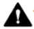

À propos de la tablette Manuel de sécurité et réglementation
À propos de la tablette Manuel de sécurité et réglementationOù trouver des informations sur le produit
Informations sur les réglementations
Ce guide comprend les mêmes consignes de sécurité de base que le livret imprimé "Sécurité et garantie" fourni avec la Google Pixel Tablet et la station de recharge avec haut-parleurs. Il contient également d'autres informations sur la sécurité, la réglementation et la garantie concernant ces appareils.
Informations réglementaires et de sécurité : g.co/pixeltablet/reg ou Paramètres À propos de la tablette Manuel de sécurité et réglementation
Conditions de garantie applicables à votre pays d'achat et instructions pour déposer une réclamation : g.co/devicewarranty.
Libellés électroniques réglementaires et débit d'absorption spécifique (DAS) de votre appareil : Paramètres À propos de la tablette Libellés réglementaires
Informations sur l'écoconception (performance énergétique) : g.co/ecodesign
Aide du produit : g.co/pixeltablet/care
|  | AVERTISSEMENT : INFORMATIONS RELATIVES À LA SANTÉ ET LA SÉCURITÉ, À LIRE AVANT TOUTE UTILISATION POUR RÉDUIRE LE RISQUE D'INCONFORT, DE DOMMAGES CORPORELS OU MATÉRIELS (Y COMPRIS SUR LA GOOGLE PIXEL TABLET ET SES ACCESSOIRES OU TOUT APPAREIL CONNECTÉ) ET TOUT AUTRE DANGER POTENTIEL |
Manipulez la tablette, la station de recharge et les accessoires avec soin. Vous risquez d'endommager l'appareil, ainsi que les accessoires ou batteries fournis, si vous le démontez, le faites tomber, le tordez, le brûlez, l'écrasez ou le percez. Veillez à retirer la tablette avec délicatesse lorsqu'elle est sur sa station de recharge. N'utilisez pas la tablette, la station de recharge et les accessoires si le boîtier est endommagé, si l'écran est fissuré ou s'ils comportent toute autre forme de dommage physique. L'utilisation d'une tablette, d'une station de recharge ou d'accessoires endommagés peut provoquer une surchauffe ou des blessures. N'exposez pas les appareils à des liquides, car cela risquerait d’entraîner un court-circuit et une surchauffe. Si l'un de vos appareils est mouillé, n'essayez pas de le sécher à l'aide d'une source de chaleur externe.
La tablette, la station de recharge et les accessoires sont conçus pour fonctionner en intérieur, dans un environnement sec. Vos appareils fonctionnent de manière optimale à une température ambiante comprise entre 0 et 35 °C, et ils doivent être stockés à une température ambiante comprise entre -20 et 45 °C. N'exposez pas les appareils à des températures supérieures à 45 °C, par exemple sur le tableau de bord d'une voiture ou près d'une bouche de chauffage, car cela pourrait les endommager, provoquer une surchauffe de la batterie ou un incendie. Tenez-les à l'écart des sources de chaleur et de la lumière directe du soleil. Si l'appareil devient trop chaud, débranchez-le de sa source d'alimentation (s'il est branché), placez-le à un autre endroit plus frais et attendez qu'il refroidisse avant de l'utiliser. Vos produits sont conçus pour fonctionner à une altitude maximale de 5 000 mètres.
Dans certains modes (jeu, réalisation de vidéos, lampe torche, ou fonctionnalités de réalité augmentée ou de réalité virtuelle), votre tablette peut générer davantage de chaleur que ce qu'elle produit dans des conditions typiques de fonctionnement. Elle peut alors basculer en mode d'économie d'énergie ou s'éteindre provisoirement. Faites particulièrement attention lorsque vous vous servez de l'appareil avec ces modes. Pour en savoir plus sur les risques associés, reportez-vous à la section "Exposition prolongée à la chaleur" ci-dessous.
N'essayez pas de réparer votre tablette, votre station de recharge et vos accessoires vous-même. Vous risqueriez de les endommager ou de vous blesser. Contactez le service client si le produit ne fonctionne pas correctement ou a été endommagé. Pour en savoir plus, consultez la page g.co/pixeltablet/care.
Assurez-vous que la station de recharge, l'adaptateur secteur et la tablette sont placés dans un endroit bien ventilé lorsqu’ils sont en cours d’utilisation ou lors de la recharge. L'utilisation de câbles ou d'adaptateurs secteur endommagés, ou la recharge dans un environnement humide, peuvent provoquer un incendie, un choc électrique et des blessures, ou endommager les appareils ou d'autres biens. Assurez-vous que les broches de charge sont exemptes d'humidité et de poussières avant de poser la tablette sur la station de recharge. Ne rechargez pas votre tablette si elle est mouillée. Évitez de recharger l'appareil en plein soleil.
Lorsque l'appareil est en charge, assurez-vous que l'adaptateur secteur est branché sur une prise à proximité et facilement accessible. Ne forcez pas l'insertion de l'adaptateur secteur et autres prises dans une prise électrique si l'espace est insuffisant pour les accueillir. Lorsque vous débranchez l'adaptateur secteur de la prise, tirez sur l'adaptateur et non sur le câble de recharge. Veillez à ne pas tordre ni pincer le câble, et ne forcez pas l'insertion d'un connecteur dans un port. Suivez les instructions si vous recevez un message vous demandant de débrancher l'adaptateur secteur ou de le retirer de la station de recharge. Avant d'essayer de charger à nouveau votre appareil, veillez à ce que le connecteur du câble de l'adaptateur secteur et le port de recharge de l'appareil soient tous deux secs et que rien ne les obstrue.
Ne placez pas d'objets métalliques ou magnétiques sur les broches exposées de la station de recharge et de la tablette lorsque celle-ci se trouve sur la station de recharge. Ces objets ou vos appareils risqueraient de chauffer.
La station de recharge avec haut-parleurs est fournie avec un adaptateur secteur possédant les certifications adéquates.
Rechargez votre tablette avec un chargeur compatible USB-C PD ou des accessoires de recharge compatibles disponibles sur le Google Store ou auprès de revendeurs Google autorisés (repérez le logo "Made for" de Google). L'adaptateur secteur doit être certifié comme présentant une sortie avec une source d'alimentation à puissance limitée conformément à la norme CEI 60950-1 et/ou classée PS2 conformément à la norme CEI 62368-1, et possédant les caractéristiques suivantes : 5 Vcc et 3 A maximum, 9 Vcc et 2 A maximum, ou les deux. L'utilisation d'accessoires de charge non compatibles peut provoquer un incendie, un choc électrique et des blessures, ou endommager l'appareil et les accessoires.
La tablette, la station de recharge et son adaptateur secteur génèrent de la chaleur en fonctionnement normal et respectent les normes et les limites relatives à la température de surface. Évitez tout contact prolongé avec la peau lorsque l'appareil est en charge ou utilisé. En effet, toute exposition de la peau à des surfaces brûlantes pendant une longue période peut entraîner inconfort ou brûlures. Ne dormez pas sur ou avec votre appareil ou son adaptateur secteur, et ne les couvrez pas avec une couverture ou un oreiller. Gardez cela à l'esprit si vous souffrez d'une pathologie qui affecte votre sensibilité thermique cutanée.
Cet appareil n'est pas un jouet. Il peut contenir (ou peut être fourni avec) des petites pièces, des éléments en plastique, en verre ou en métal, des câbles, ainsi que des pièces à bords tranchants qui peuvent causer des blessures ou engendrer un risque d'étouffement. Les enfants peuvent s'étrangler avec les cordons et les câbles. Maintenez l'appareil et ses accessoires, y compris les câbles et cordons, hors de portée des enfants (à plus d'un mètre de distance) et n'autorisez pas ces derniers à jouer avec la tablette et ses accessoires. Ils pourraient se faire mal, blesser d'autres personnes ou endommager accidentellement les appareils. En cas d'ingestion de petites pièces ou de blessure, consultez immédiatement un médecin.
 |
Une exposition prolongée à des sons forts (y compris la musique) peut provoquer une perte auditive. Pour prévenir d'éventuelles lésions auditives, évitez toute écoute prolongée à un volume élevé. Si vous êtes exposé de manière continue à des bruits ambiants importants et à des volumes élevés, ceux-ci pourront vous paraître moins forts qu'ils ne le sont réellement. Vérifiez le volume avant d'utiliser des écouteurs ou un casque. |
Cette tablette contient une batterie rechargeable lithium-ion qui est un composant sensible, susceptible d'occasionner des blessures s'il est endommagé. Ne tentez pas de la retirer vous-même. Pour procéder à son remplacement, contactez Google ou un fournisseur de services agréé par Google. Pour plus d'informations, consultez la page g.co/pixeltablet/contact. Ne confiez pas le remplacement de la batterie à des professionnels non qualifiés, car ils risqueraient d'endommager votre appareil. Le remplacement ou l'utilisation de batteries non conformes peut présenter un risque d'incendie, d'explosion, de fuite ou autres. Ne modifiez pas la batterie et ne la reconstruisez/reconditionnez pas. Ne tentez en aucun cas de la percer, d'y insérer des objets, de l'immerger ni de la mettre en contact avec de l'eau ou d'autres liquides. Ne l'exposez pas à une flamme, à une chaleur excessive ni à d'autres dangers.
Lors de la mise au rebut et du transport de votre appareil, des batteries et des accessoires, respectez les réglementations locales en matière d’environnement et de transport. Transportez-les comme il se doit et ne les jetez pas avec les ordures ménagères. Si vous ne respectez pas ces prescriptions, ces éléments matériels risquent d'exploser, de causer un incendie et/ou de créer d'autres dangers. Vous ne devez en aucun cas ouvrir, écraser ou brûler l'appareil, la batterie et les accessoires, ni les exposer à des températures supérieures à 45 °C. Pour en savoir plus sur le recyclage de l'appareil, de la batterie et des accessoires, consultez g.co/HWRecyclingProgram.
Pour éviter d'endommager les pièces de votre tablette et de la station de recharge ou leurs circuits internes, veillez à ne pas utiliser ni stocker l'appareil ni ses accessoires dans des environnements poussiéreux, enfumés, humides ou sales, ou à proximité de champs magnétiques. Tenez-les éloignés des sources de chaleur et des rayons directs du soleil. Ne laissez pas vos appareils à l'intérieur d'un véhicule ou dans des lieux où la température peut dépasser 45 °C, comme le tableau de bord d'une voiture, le rebord d'une fenêtre, près d'une bouche de chauffage ou derrière du verre exposé à la lumière directe du soleil ou à une forte lumière ultraviolette pendant de longues périodes. Cela peut endommager les appareils, provoquer la surchauffe de la batterie, ou présenter un risque d'incendie ou d'explosion.
Cet appareil a été évalué et répond aux exigences réglementaires applicables en matière d'exposition aux ondes radio. Il a été conçu et fabriqué de façon à ne pas excéder les limites d'émission applicables en matière d'exposition aux radiofréquences (RF).
Dans les pays où le débit d'absorption spécifique (DAS) moyen maximal est de 1,6 W/kg sur 1 gramme de tissu du corps, les valeurs de DAS les plus élevées pour ce type d'appareil sont de 1,14 W/kg lorsqu'il est utilisé directement contre le corps. Dans les pays où le DAS moyen maximal est de 2,0 W/kg sur 10 grammes de tissu du corps, et de 4,0 W/kg sur 1 gramme de tissu du corps pour une utilisation contre un membre, les valeurs de DAS les plus élevées pour ce type d'appareil sont de 0,56 W/kg lorsqu'il est utilisé directement contre le corps et de 1,93 W/kg lorsqu'il est utilisé directement contre un membre.
Vous trouverez les valeurs de DAS applicables à chacune de ces juridictions sur votre tablette : Paramètres À propos de la tablette Libellés réglementaires.
Pour réduire l'exposition aux radiofréquences, utilisez une option mains libres, comme le haut-parleur intégré, le casque fourni ou tout autre accessoire similaire. Assurez-vous que les accessoires de l'appareil, tels que sa coque ou son étui, sont exempts de composants métalliques. Éloignez suffisamment l'appareil de votre corps pour respecter les distances minimales de sécurité.
PRÉCAUTIONS D'UTILISATION DE L'APPAREIL
L'utilisation de la tablette peut être interdite dans certaines situations (par exemple, au volant) et sujette à des restrictions dans certains lieux (hôpitaux, avions, stations-service, écoles, etc.).
Maintenez toujours une distance suffisante entre l'appareil (et son chargeur) et les pacemakers ou tout autre type d'implant médical (pompes à insuline, neurostimulateurs, etc.).
Voici quelques recommandations pour réduire l'exposition aux rayonnements :
Pour en savoir plus sur le DAS, consultez les pages ci-dessous :
fcc.gov
icnirp.org
ec.europa.eu
dot.gov.in
Cet appareil a été évalué et répond aux exigences réglementaires applicables en matière d'exposition aux ondes radio. Il a été conçu et fabriqué de façon à ne pas excéder les limites d'émission applicables en matière d'exposition aux radiofréquences (RF).
Observez les règles relatives à l'interdiction de la technologie sans fil (par exemple, cellulaire ou Wi-Fi). Sachez que, même si votre téléphone est conforme aux réglementations sur les émissions de radiofréquences, le fait d'utiliser un appareil sans fil peut affecter le fonctionnement d'autres équipements électroniques. Par exemple, en avion ou juste avant l'embarquement, respectez les instructions d'utilisation de votre appareil sans fil fournies par la compagnie aérienne. Utiliser un appareil sans fil dans un avion peut perturber les réseaux sans fil, compromettre le fonctionnement de l'avion ou être interdit par la loi. Il se peut cependant que vous soyez autorisé à utiliser votre appareil en mode Avion.
Lorsqu'il est interdit d'utiliser une bande ultralarge dans votre région (par exemple, en avion), vous pouvez la désactiver en activant le mode Avion. Pour cela, ouvrez les réglages rapides, puis appuyez sur Mode Avion. Pour désactiver le mode Avion, accédez à Paramètres Réseau et Internet Mode Avion.
L'appareil contient des aimants, et utilise des signaux radio et d'autres composants qui génèrent des champs électromagnétiques. Ces aimants et ces champs électromagnétiques peuvent interférer avec les dispositifs médicaux, tels que les pacemakers et d'autres implants médicaux. Assurez toujours une distance suffisante entre la tablette, ses accessoires et ses chargeurs et le dispositif médical. Si vous avez des questions sur l'utilisation de votre appareil Google avec un dispositif médical, consultez un professionnel de santé avant toute utilisation de votre tablette et de ses accessoires. Si vous soupçonnez votre tablette et ses accessoires d'interférer avec votre dispositif médical, éteignez votre appareil Google et consultez votre médecin pour obtenir des informations spécifiques à votre dispositif médical.
Éteignez votre appareil sans fil lorsque le personnel des hôpitaux, des cliniques ou d'autres établissements de santé vous le demande. Cette démarche vise à éviter d'éventuelles interférences avec les appareils médicaux sensibles.
Certaines personnes peuvent souffrir de réactions cutanées causées par un contact prolongé avec des matériaux utilisés dans les produits, comme le nickel. Si vous constatez une irritation cutanée à des endroits fréquemment en contact avec l'appareil, cessez de l'utiliser et consultez un médecin.
Un faible pourcentage d'utilisateurs peut être victime de maux de tête, de crises d'épilepsie, de pertes de connaissance, de fatigue oculaire, de fatigue ou de sécheresse oculaire déclenchés par un stimulus visuel, par exemple des lumières clignotantes, des motifs aux couleurs vives ou des appareils électroniques dotés d'un écran. Ces symptômes peuvent toucher des personnes n'ayant jamais connu de tels problèmes auparavant. Si vous avez déjà été victime de crises d'épilepsie, de pertes de connaissance ou de malaises, ou avez déjà connu des problèmes de santé ou subi un inconfort, que vous croyez susceptibles d'être influencés par votre tablette, consultez un médecin avant toute utilisation de votre appareil. Cessez immédiatement d'utiliser votre tablette et consultez un médecin si vous éprouvez des symptômes que vous croyez pouvoir être causés ou influencés par votre tablette (par exemple, des maux de tête, des pertes de connaissance ou des crises d'épilepsie).
Certaines actions répétitives, telles que la saisie sur clavier et les gestes d'appui et de balayage sur l'écran de votre tablette, peuvent causer une gêne aux doigts, aux mains, aux poignets, aux bras, aux épaules ou à d'autres parties du corps. Si vous constatez ce type de gêne, arrêtez d'utiliser votre tablette et consultez un médecin.
Suivez ces consignes lors de l'utilisation, de l'entreposage ou du nettoyage de la tablette, de la station de recharge et des accessoires :
Veillez à ne pas utiliser ni recharger la tablette, la station de recharge et les accessoires à des températures ambiantes inférieures à 0 °C ou supérieures à 35 °C. Si l'appareil atteint une température interne en dehors de la plage de température normale de fonctionnement, il tente de la réguler, avec les conséquences possibles suivantes : réduction des performances et de la connectivité, recharge impossible, ou extinction de l'écran ou de l'appareil. Il se peut que vous ne puissiez pas utiliser l'appareil tant qu'il n'a pas réajusté sa température. Déplacez-le vers un endroit plus frais (ou plus chaud) et attendez quelques minutes avant d'essayer de l'utiliser à nouveau.
Débranchez la tablette, la station de recharge et l'adaptateur secteur avant de les nettoyer, en cas d'orage ou lorsque vous ne vous en servez pas pendant une longue période. Ne nettoyez pas votre tablette pendant qu'elle est en charge. Cela pourrait provoquer des blessures ou endommager votre appareil. Évitez d'utiliser un solvant ou un produit abrasif qui risquent d'endommager la surface du produit. N'utilisez pas de détergent chimique, de poudre ni d'autres agents chimiques (comme le benzène) pour nettoyer la tablette ou ses accessoires.
L'exposition à des produits de maquillage, des substances chimiques ou des tissus teints, comme le jean, peut tacher les appareils et les étuis de couleur claire.
Pour nettoyer la tablette et la station de recharge, nous vous recommandons de les essuyer délicatement avec un chiffon doux non pelucheux. Utilisez un chiffon sec pour les traces, les taches ou la poussière, et un chiffon légèrement humide (mais pas mouillé) pour les taches de couleur telles qu'une trace de maquillage ou un pantalon qui a déteint. Si l'écran est taché ou sale, utilisez des produits nettoyants pour lunettes ou des lingettes pour écran. Pour nettoyer l'arrière de l'appareil ainsi que ses côtés, utilisez un savon ménager ordinaire ou des lingettes nettoyantes sans javel.
Pour nettoyer l'étui en silicone de votre tablette, retirez-la de l'étui. Utilisez un chiffon doux légèrement humide et non pelucheux pour essuyer l'extérieur et l'intérieur de l'étui. N'utilisez pas de produits nettoyants pour vitres, de produits nettoyants ménagers, de produits aérosols, de solvants, d'ammoniaque, de produits abrasifs ni de produits nettoyants contenant du peroxyde d'hydrogène pour nettoyer l'étui.
Pour désinfecter la tablette, y compris l'écran, vous pouvez utiliser des lingettes désinfectantes ménagères ordinaires ou à base d'alcool isopropylique à 70 %. N'utilisez pas de lingettes imprégnées d'eau de Javel. Pour en savoir plus sur l'entretien et le nettoyage, consultez la page g.co/pixeltablet/care.
La tablette, la station de recharge, le chargeur et les autres accessoires fournis avec l'appareil ne résistent ni à l'eau ni à la poussière. Les dégâts causés par un liquide annulent la garantie. N'exposez pas la tablette, la station de recharge, le chargeur de l'appareil ou les autres accessoires à des liquides ou à la poussière. Cela risquerait d'entraîner un court-circuit et/ou une surchauffe.
Les réparations ou les modifications non autorisées peuvent endommager l'appareil de façon irréversible et avoir une incidence sur la couverture de la garantie et sur les autorisations réglementaires. La tablette et la station de recharge ne doivent être réparées que par Google ou un fournisseur de services agréé par Google. Contactez le service client pour bénéficier d'une maintenance agréée. Si vous envoyez la tablette ou la station de recharge en réparation, il se peut que vous receviez un appareil de remplacement à la place de l'appareil d'origine. Les appareils envoyés pour réparation peuvent être remplacés par des appareils reconditionnés du même type au lieu d'être réparés. La réparation des appareils peut être effectuée à l'aide de pièces reconditionnées. Si un appareil permet de conserver des données générées par l'utilisateur, celles-ci risquent d'être perdues en cas de réparation ou de remplacement. Pour accéder à l'aide et à l'assistance en ligne, consultez la page g.co/pixeltablet/help.
Les informations sur les réglementations, les certifications et les marques de conformité spécifiques à la Pixel Tablet sont consultables sur votre téléphone dans Paramètres À propos de la tablette Libellés réglementaires, ainsi que sur la tablette et la station de recharge.
Important : La conformité de cet appareil et de son adaptateur secteur avec les normes de compatibilité électromagnétique (CEM) a été démontrée dans des conditions qui incluent l'utilisation de périphériques conformes et de câbles blindés entre les composants du système. Il est important d'utiliser des périphériques conformes et des câbles blindés entre les composants du système afin de réduire la possibilité d'interférences avec les radios, les téléviseurs et d'autres appareils électroniques.
Remarque : Cet équipement a été testé et déclaré conforme aux limites pour un appareil numérique de classe B, conformément à l'article 15 de la réglementation de la FCC. Ces limites visent à assurer une protection raisonnable contre les interférences nuisibles dans une installation résidentielle. Cet équipement génère, utilise et peut émettre des radiofréquences, et, s'il n'est pas installé et utilisé conformément aux instructions, peut provoquer des interférences nuisibles avec les communications radio. Cependant, il ne peut être exclu que des interférences se produisent dans une installation donnée. Si cet équipement génère des interférences nuisant à la réception radio ou télévisuelle, ce qui peut être déterminé en mettant l'appareil hors tension, puis à nouveau sous tension, l'utilisateur est invité à corriger les interférences en appliquant une ou plusieurs des mesures suivantes :
Toute modification n'ayant pas été approuvée expressément par Google peut entraîner l'annulation du droit qui vous a été accordé d'utiliser l'équipement.
Cet appareil est conforme à l'article 15 de la réglementation de la FCC. Son fonctionnement est soumis aux deux conditions suivantes :
Les appareils BUL ne peuvent pas être utilisés pour faire fonctionner des jouets. Leur utilisation est interdite à bord des avions, des bateaux ou des satellites.
Pixel Tablet : GTU8P
Station de recharge avec haut-parleurs pour Pixel Tablet : GMD6J
Nom du produit
Pixel Tablet avec station de recharge avec haut-parleurs
Entité responsable aux États-Unis :
Google LLC
1600 Amphitheatre Parkway
Mountain View, CA 94043, États-Unis
Contact : g.co/pixeltablet/contact
This device complies with ICES-003 Class B limits.
Cet appareil est conforme aux limites de la norme ICES-003 pour appareils de classe B.
Your device complies with ISED license-exempt RSS standard(s). Operation is subject to the following two conditions:
Le présent appareil est conforme aux CNR d'ISDE Canada applicables aux appareils radio exempts de licence. L'exploitation est autorisée aux deux conditions suivantes :
The device for operation in the band 5150–5250 MHz is only for indoor use to reduce the potential for harmful interference to co-channel mobile satellite systems.
Les dispositifs fonctionnant dans la bande de 5 150 à 5 250 MHz sont réservés uniquement pour une utilisation à l'intérieur afin de réduire les risques de brouillage préjudiciable aux systèmes de satellites mobiles utilisant les mêmes canaux.
 |
Par la présente, Google LLC déclare que les équipements radioélectriques de type GTU8P et GMD6J sont conformes à la réglementation sur les équipements radioélectriques de 2017. La déclaration de conformité complète est disponible à l'adresse internet suivante : g.co/pixeltablet/conformity. |
Sur les fréquences comprises entre 5 150 et 5 350 MHz, l'appareil est exclusivement destiné à un usage en intérieur au Royaume-Uni.
La BUL doit être utilisée en intérieur. Si elle est utilisée en extérieur, elle ne doit pas être attachée à une installation, une infrastructure ou une antenne extérieure fixe.
Les données indiquées ici correspondent à la puissance maximale des radiofréquences dans les bandes de fréquences sur lesquelles l'équipement radio fonctionne.
| Fréquence | Puissance |
| Wi-Fi : de 2 400 à 2 483,5 MHz | < 20 dBm |
| Wi-Fi : de 5 150 à 5 350 MHz | < 23 dBm |
| Wi-Fi : de 5 470 à 5 725 MHz | < 23 dBm |
| Wi-Fi : de 5 725 à 5 850 MHz | < 23 dBm |
| Bluetooth : de 2 400 à 2 483,5 MHz | < 20 dBm |
| BUL (6 489,6 MHz, 7 987,2 MHz) | < -6 dBm/50 MHz |
La Pixel Tablet est conforme aux spécifications de radiofréquences lorsqu'elle est utilisée directement contre le corps, avec un DAS moyen maximal de 2 W/kg sur 10 grammes de tissu.
Les valeurs de DAS les plus élevées signalées pour le type d'appareil auquel correspond la Pixel Tablet sont de 0,56 W/kg pour le corps.
Google ne peut être tenu responsable en cas d'interférences avec la radio ou la télévision causées par une modification non autorisée des appareils ou des accessoires, ou par la substitution ou l'ajout de câbles de connexion et d'équipements différents de ceux préconisés par Google. Il appartient à l'utilisateur de corriger les interférences causées par des actions non autorisées de ce type. Google et ses revendeurs ou distributeurs autorisés ne sauraient être tenus responsables en cas de dommage ou d'infraction à la législation en vigueur dus au non-respect de ces consignes d'utilisation.
Ce produit est conforme au texte réglementaire n° 3032 de 2012 "Réglementation sur la restriction de l'utilisation de certaines substances dangereuses dans les équipements électriques et électroniques".
UK REACH (Registration, Evaluation, Authorization and Restriction of Chemicals, Statutory Instrument 2020 No. 1577) est le cadre réglementaire pour les substances chimiques au Royaume-Uni. Google se conforme à toutes les exigences du règlement et s'engage à fournir à ses clients les informations concernant la présence de substances extrêmement préoccupantes (SVHC). Pour en savoir plus, vous pouvez nous contacter à l'adresse suivante : Env-Compliance@google.com.
 |
Le symbole DEEE ci-contre signifie que, conformément aux lois et aux réglementations locales, votre produit ainsi que sa ou ses batteries doivent être mis au rebut séparément des déchets ménagers. À la fin du cycle de vie du produit, déposez-le dans un centre de collecte désigné par les autorités locales afin qu'il soit recyclé ou éliminé sans danger. |
La collecte séparée et le recyclage de votre produit, de ses accessoires électroniques et de sa ou ses batteries contribuent à préserver les ressources naturelles ainsi qu'à protéger l'environnement et la santé humaine.
Fabricant : Google LLC, 1600 Amphitheatre Parkway, Mountain View, CA 94043, États-Unis
 |
Par la présente, Google LLC déclare que les équipements radioélectriques de type GTU8P and GMD6J sont conformes à la Directive 2014/53/UE (directive sur les équipements radioélectriques). La déclaration de conformité complète est disponible à l'adresse suivante : g.co/pixeltablet/conformity. |
Sur les fréquences comprises entre 5 150 et 5 350 MHz, l'appareil est exclusivement destiné à un usage en intérieur dans les pays suivants : Allemagne, Autriche, Belgique, Bulgarie, Chypre, Croatie, Danemark, Espagne, Estonie, Finlande, France, Grèce, Hongrie, Irlande, Islande, Italie, Lettonie, Liechtenstein, Lituanie, Luxembourg, Malte, Norvège, Pays-Bas, Pologne, Portugal, République tchèque, Roumanie, Royaume-Uni (Irlande du Nord), Slovaquie, Slovénie, Suède, Suisse et Turquie.
La BUL doit être utilisée en intérieur. Si elle est utilisée en extérieur, elle ne doit pas être attachée à une installation, une infrastructure ou une antenne extérieure fixe dans les pays suivants : Allemagne, Autriche, Belgique, Bulgarie, Chypre, Croatie, Danemark, Espagne, Estonie, Finlande, France, Grèce, Hongrie, Irlande, Islande, Italie, Lettonie, Liechtenstein, Lituanie, Luxembourg, Malte, Norvège, Pays-Bas, Pologne, Portugal, République tchèque, Roumanie, Royaume-Uni (Irlande du Nord), Slovaquie, Slovénie, Suède, Suisse et Turquie.
Les données indiquées ici correspondent à la puissance maximale des radiofréquences dans les bandes de fréquences sur lesquelles l'équipement radio fonctionne.
| Fréquence | Puissance |
| Wi-Fi : de 2 400 à 2 483,5 MHz | < 20 dBm |
| Wi-Fi : de 5 150 à 5 350 MHz | < 23 dBm |
| Wi-Fi : de 5 470 à 5 725 MHz | < 23 dBm |
| Wi-Fi : de 5 725 à 5 850 MHz | < 23 dBm |
| Bluetooth : de 2 400 à 2 483,5 MHz | < 20 dBm |
| BUL (6 489,6 MHz, 7 987,2 MHz) | < -6 dBm/50 MHz |
Google ne peut être tenu responsable en cas d'interférences avec la radio ou la télévision causées par une modification non autorisée des appareils ou des accessoires, ou par la substitution ou l'ajout de câbles de connexion et d'équipements différents de ceux préconisés par Google. Il appartient à l'utilisateur de corriger les interférences causées par des actions non autorisées de ce type. Google et ses revendeurs ou distributeurs autorisés ne sauraient être tenus responsables en cas de dommage ou d'infraction à la législation en vigueur dus au non-respect de ces consignes d'utilisation.
La Pixel Tablet est conforme aux spécifications de radiofréquences lorsqu'elle est utilisée directement contre le corps avec un DAS moyen inférieur ou égal à 2 W/kg sur 10 grammes de tissu, et lorsqu'elle est utilisée directement contre un membre, avec un DAS moyen inférieur ou égal à 4 W/kg sur 10 grammes de tissu.
Les valeurs de DAS les plus élevées signalées pour le type d'appareil auquel correspond la Pixel Tablet sont de 0,35 W/kg pour le corps et de 1,93 W/kg pour les membres.
|
Le symbole DEEE ci-dessus signifie que, conformément aux lois et réglementations locales, votre produit ainsi que sa ou ses batteries doivent être mis au rebut séparément des déchets ménagers. À la fin du cycle de vie du produit, déposez-le dans un centre de collecte désigné par les autorités locales afin qu'il soit recyclé ou éliminé sans danger. |
La collecte séparée et le recyclage de votre produit, de ses accessoires électroniques et de sa ou ses batteries contribuent à préserver les ressources naturelles ainsi qu'à protéger l'environnement et la santé humaine.
|
Le symbole DEEE ci-dessus signifie que, conformément à la législation et à la réglementation locales, ce produit et sa ou ses batterie(s) ne doivent pas être jetés avec les ordures ménagères. Une fois qu’il est arrivé en fin de vie, déposez ce produit dans un centre de collecte désigné par les autorités locales, où il sera mis au rebut ou recyclé en toute sécurité. |
La collecte dans une filière séparée et le recyclage du produit, de ses accessoires électriques et de sa ou ses batterie(s) contribuent à la préservation des ressources naturelles, ainsi qu’à la protection de l’environnement et de la santé humaine.

Ce produit est conforme à la directive 2011/65/UE du Parlement européen et du Conseil du 8 juin 2011 concernant la limitation de l'utilisation de certaines substances dangereuses dans les équipements électriques et électroniques (RoHS), et à ses amendements.
Le règlement européen REACH (Registration, Evaluation, Authorization and Restriction of Chemicals, CE n° 1907/2006) définit un cadre concernant l'enregistrement, l'évaluation et l'autorisation des substances chimiques, ainsi que les restrictions applicables à ces substances. Google se conforme à toutes les exigences du règlement et s'engage à fournir à ses clients les informations concernant la présence de substances extrêmement préoccupantes (SVHC). Pour en savoir plus, vous pouvez nous contacter à l'adresse suivante : Env-Compliance@google.com.
Sur les fréquences comprises entre 5 150 et 5 350 MHz, l'appareil est destiné exclusivement à un usage en intérieur afin de réduire les risques d'interférences nuisibles avec les systèmes mobiles par satellite utilisant le même canal.
Les émetteurs à bande ultralarge ne doivent pas être utilisés à une distance désignée des sites australiens de radioastronomie spécifiés. Pour plus d'informations sur la distance désignée, veuillez consulter la licence de classe LIPD (Low Interference Poncy Devices) de 2015 sur les radiocommunications publiée par l'Australian Communications and Media Authority.
Sur les fréquences 5 GHz (W52/W53), l'appareil est destiné à un usage en intérieur seulement (sauf pour la communication avec une radio haute puissance).
Il s'agit d'un équipement de classe B. Bien qu'il soit prévu pour une utilisation dans un environnement résidentiel, il pourrait nuire à la réception en cas d'utilisation à proximité d'une antenne radio ou de télévision. Suivez les instructions figurant dans le manuel.
 VCCI-B
VCCI-B
La garantie limitée est disponible sur g.co/devicewarranty.
© 2023 Google LLC. Tous droits réservés.
Pixel, le logo G, Google, ainsi que les marques et les logos associés sont des marques de Google LLC.